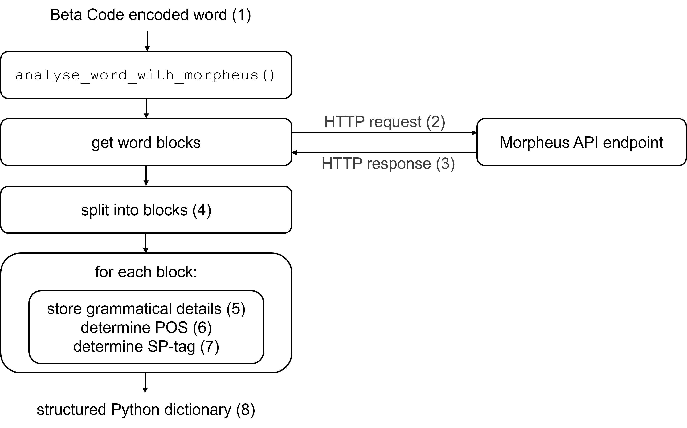

IMPLEMENTATION
Workflow and data model
A modular path from word form to a collection of inspectable analyses.

Explain the numbered stages in Figure 1
- Input: the word is provided in Beta Code.
- Orchestration:
analyse_word_with_morpheuscoordinates the analysis pipeline. - Morpheus request:
get_word_blockssends the request to the Morpheus API endpoint. - Raw response: the API returns the Morpheus analytic blocks.
- Block splitting: the response is separated into individual analysis blocks.
- POS analysis: Morphkit determines a part-of-speech category from each parse.
- Morphological tag: a project-specific SP-style tag is derived from the grammatical features.
- Output: Morphkit returns the processed analyses to the calling Python pipeline.
1. Input and query
The Greek workflow accepts a Beta Code word form and a configured Morpheus API endpoint. The notebook demonstrates conversion from Unicode Greek with beta_code.greek_to_beta_code, followed by get_word_blocks. The request layer supports timeout and retry configuration.
import beta_code
import morphkit
word = beta_code.greek_to_beta_code("του")
raw = morphkit.get_word_blocks(word, api_endpoint)2. Response segmentation and parsing
Morpheus returns text blocks. split_into_raw_blocks separates the analyses; parse_word_block extracts their fields into Python structures. The parsed records retain the analyser’s raw block and fields, including fields not recognized by Morphkit’s current mappings. Greek forms and lemmas can be represented in Beta Code and Unicode.
blocks = morphkit.split_into_raw_blocks(raw)
parsed_blocks = [morphkit.parse_word_block(block) for block in blocks]
# Each result is (raw_word, list_of_parse_dictionaries)The orchestrating function analyse_word_with_morpheus performs the query and processing in one call, returning a word-level structure with the set of analyses.
result = morphkit.analyse_word_with_morpheus(word, api_endpoint)3. Derived annotations
analyse_pos assigns a part-of-speech category to each parse using rule-based heuristics over Morpheus fields. analyse_morph_tag maps features into a Sandborg–Petersen-style tag used in the N1904-TF research setting. These are derived annotations, separate from Morpheus’s response. Unknown or ambiguous feature mappings are represented according to the project’s tag conventions.
4. Comparison and ordering
decode_tag exposes tag features. compare_tags computes a weighted feature similarity, intended as a practical aid to sorting rather than a linguistic probability or contextual disambiguator. annotate_and_sort_analyses can order candidates using a reference lemma and tag, for example to inspect the relationship between Morpheus output and an existing corpus annotation.
5. Output and downstream use
The resulting records can be filtered, compared, serialized, or passed to corpus pipelines such as Text-Fabric. The full set of parses remains available so that downstream decisions can be documented and revisited.